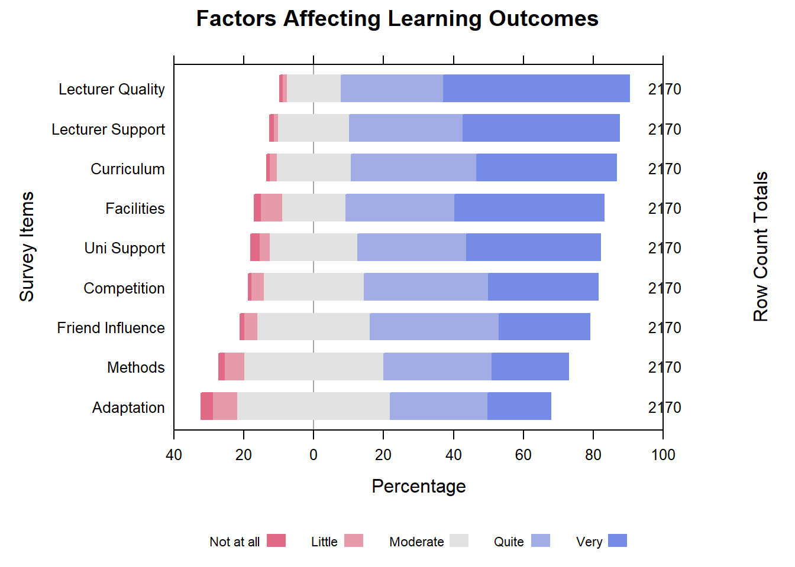
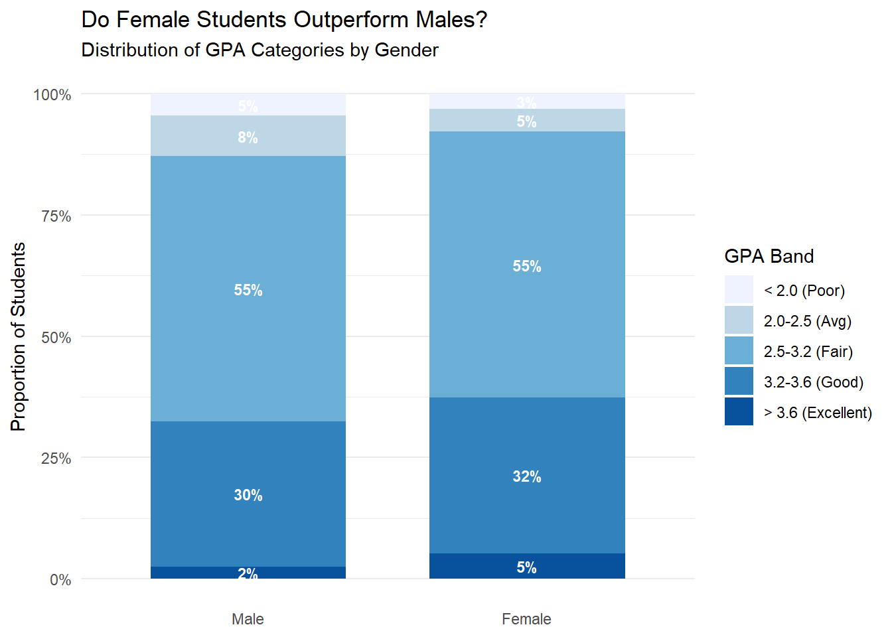
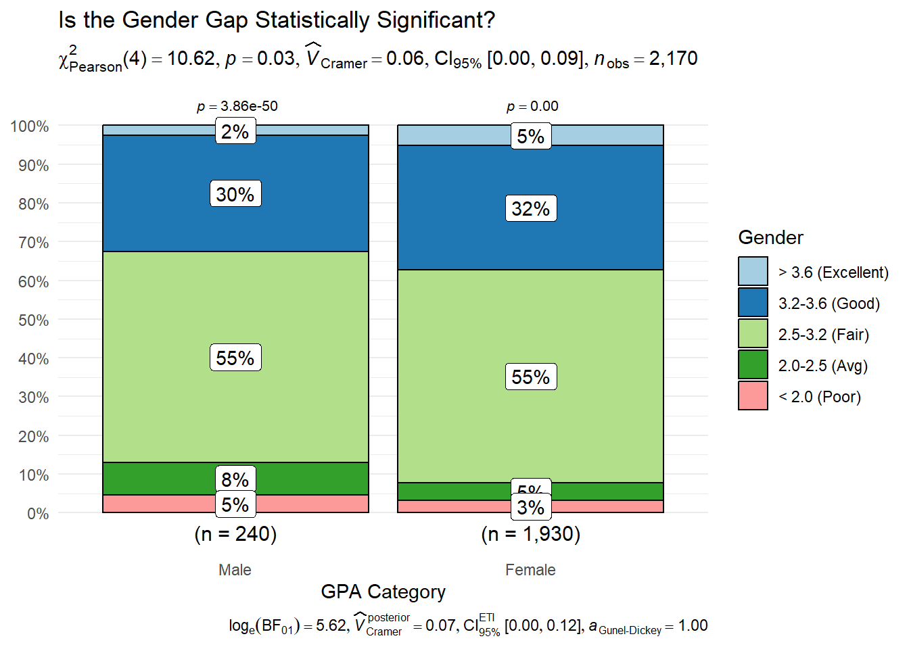
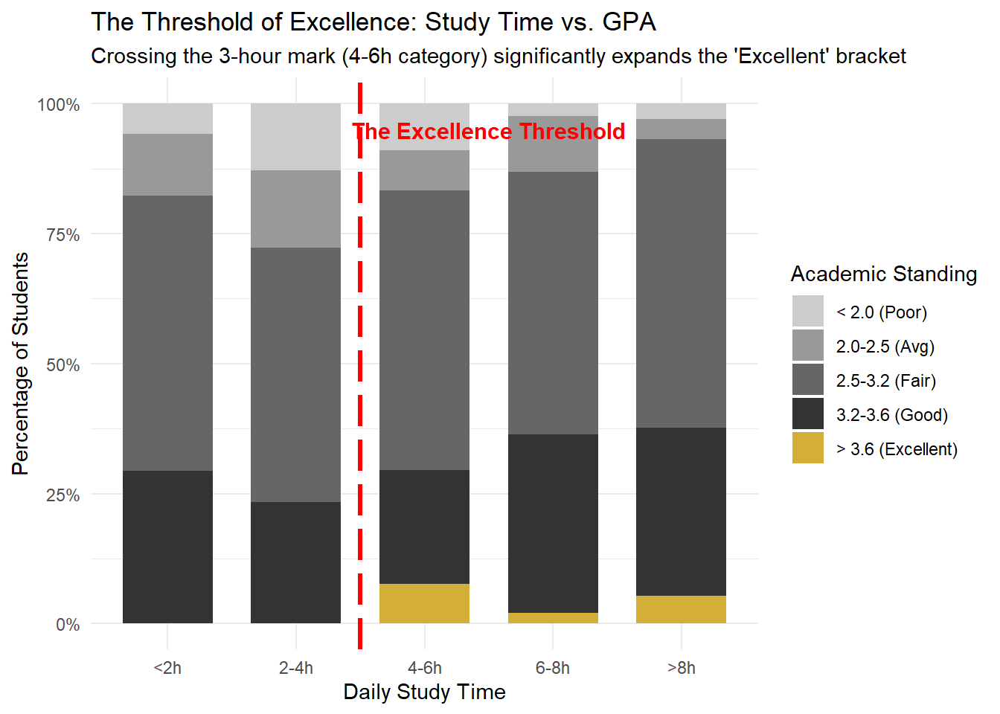

pacman::p_load(tidyverse, readxl, ggridges, ggthemes, hrbrthemes,
ggstatsplot, ggstats, patchwork, ggdist,HH, reshape2)Take-home Exercise 01
Overview
Setting the scene
In the rapidly evolving landscape of higher education, understanding the drivers behind academic success is crucial for both institutional growth and student development. This analysis focuses on a comprehensive survey conducted at the University of Education, Vietnam National University, Hanoi.
The survey captures student perspectives on various internal and external factors that influence their educational journey. Unlike traditional academic reports that rely solely on final grades, this dataset provides a multi-dimensional view of student life, including:
Self-Study Behaviors: How students manage their independent learning time.
Lecturer Engagement: The perceived quality and impact of teaching staff.
Institutional Support: The role of school infrastructure and facilities in fostering an effective learning environment.
By applying survey analysis techniques, we aim to transform these raw Likert-scale responses into decision-relevant insights that could help educators optimize teaching strategies and resource allocation.
Our task
The primary objective of this exercise is to apply visually-driven survey analysis methods to the Vietnam National University dataset. Following the principles of creating “enlightening and truthful” visualizations, I will use the tidyverse ecosystem and ggplot2 extensions to reveal and communicate at least five key observations.
Data Preparation
Load R packages
We will use pacman::p_load to ensure all necessary ggplot2 extensions are available for the static visualizations.
Load the dataset
Dataset of factors affecting learning outcomes of students
library(readxl)
students_data <- read_excel("data/data.xlsx")summary(students_data) Year Gender Policy_Stu Minority_Stu Poor_Stu
Min. :3.000 Min. :1.000 Min. :1.000 Min. :1.000 Min. :1.00
1st Qu.:4.000 1st Qu.:2.000 1st Qu.:1.000 1st Qu.:2.000 1st Qu.:2.00
Median :5.000 Median :2.000 Median :2.000 Median :2.000 Median :2.00
Mean :4.672 Mean :1.889 Mean :1.647 Mean :1.941 Mean :1.96
3rd Qu.:5.000 3rd Qu.:2.000 3rd Qu.:2.000 3rd Qu.:2.000 3rd Qu.:2.00
Max. :5.000 Max. :2.000 Max. :2.000 Max. :2.000 Max. :2.00
Father_Edu Mother_Edu Father_Occupation Mother_Occupation
Min. :1.000 Min. :1.000 Min. :1.000 Min. :1.000
1st Qu.:3.000 1st Qu.:3.000 1st Qu.:2.000 1st Qu.:2.000
Median :4.000 Median :4.000 Median :3.000 Median :3.000
Mean :3.747 Mean :3.664 Mean :2.484 Mean :2.498
3rd Qu.:5.000 3rd Qu.:5.000 3rd Qu.:3.000 3rd Qu.:3.000
Max. :6.000 Max. :6.000 Max. :5.000 Max. :5.000
Time_Friends Time_SocicalMedia Time_Studying GPA
Min. :1.000 Min. :1.000 Min. :1.000 Min. :1.0
1st Qu.:1.000 1st Qu.:2.000 1st Qu.:5.000 1st Qu.:3.0
Median :2.000 Median :3.000 Median :5.000 Median :3.0
Mean :2.274 Mean :2.836 Mean :4.719 Mean :3.3
3rd Qu.:3.000 3rd Qu.:4.000 3rd Qu.:5.000 3rd Qu.:4.0
Max. :5.000 Max. :5.000 Max. :5.000 Max. :5.0
Adapt_Learning_Uni Study_Methods SupportOf_Uni SupportOf_Lec
Min. :1.000 Min. :1.000 Min. :1.000 Min. :1.000
1st Qu.:3.000 1st Qu.:3.000 1st Qu.:3.000 1st Qu.:4.000
Median :3.000 Median :4.000 Median :4.000 Median :4.000
Mean :3.502 Mean :3.662 Mean :4.001 Mean :4.186
3rd Qu.:4.000 3rd Qu.:4.000 3rd Qu.:5.000 3rd Qu.:5.000
Max. :5.000 Max. :5.000 Max. :5.000 Max. :5.000
Facilitie_Uni Quality_Lecturer TrainingCurriculum Competitive_Class
Min. :1.000 Min. :1.000 Min. :1.000 Min. :1.000
1st Qu.:3.000 1st Qu.:4.000 1st Qu.:4.000 1st Qu.:3.000
Median :4.000 Median :5.000 Median :4.000 Median :4.000
Mean :4.073 Mean :4.329 Mean :4.128 Mean :3.935
3rd Qu.:5.000 3rd Qu.:5.000 3rd Qu.:5.000 3rd Qu.:5.000
Max. :5.000 Max. :5.000 Max. :5.000 Max. :5.000
InfuenceF_Friends
Min. :1.000
1st Qu.:3.000
Median :4.000
Mean :3.831
3rd Qu.:5.000
Max. :5.000 Data transformation
Convert columns into Factors.
# Data Transformation
students_clean <- students_data %>%
mutate(
# 1. Recoding Demographic Factors
Gender = factor(Gender,
levels = c(1, 2),
labels = c("Male", "Female")),
Year = factor(Year,
levels = c(1, 2, 3, 4, 5),
labels = c("Year 1", "Year 2", "Year 3", "Year 4", "Graduated")),
# 2. Recoding Ordinal GPA (Ordered Factor)
GPA = factor(GPA,
levels = c(1, 2, 3, 4, 5),
labels = c("< 2.0 (Poor)", "2.0-2.5 (Avg)",
"2.5-3.2 (Fair)", "3.2-3.6 (Good)",
"> 3.6 (Excellent)"),
ordered = TRUE),
# 3. Recoding Binary Survey Questions
across(c(Policy_Stu, Minority_Stu, Poor_Stu),
~ factor(.x, levels = c(1, 2), labels = c("Yes", "No")))
)
# 4. Preparing Likert Scales for Visualization
# We convert these to factors so the Likert chart can identify them as categories
likert_levels <- c("Not at all", "Little", "Moderate", "Quite", "Very")
students_likert <- students_clean %>%
mutate(across(c(Adapt_Learning_Uni, Study_Methods, SupportOf_Uni,
SupportOf_Lec, Facilitie_Uni, Quality_Lecturer,
TrainingCurriculum, Competitive_Class, InfuenceF_Friends),
~ factor(.x, levels = 1:5, labels = likert_levels, ordered = TRUE)))summary(students_clean$GPA) < 2.0 (Poor) 2.0-2.5 (Avg) 2.5-3.2 (Fair) 3.2-3.6 (Good)
73 109 1189 692
> 3.6 (Excellent)
107 Likert Diverging Bar Chart
We will use the ggstats package (function gglikert).
Prepare the Data Summary
We keep counts here so HH can calculate the totals. Rename for cleaner chart labels.
likert_summary <- students_likert %>%
dplyr::select(Adapt_Learning_Uni, Study_Methods, SupportOf_Uni,
SupportOf_Lec, Facilitie_Uni, Quality_Lecturer,
TrainingCurriculum, Competitive_Class, InfuenceF_Friends) %>%
pivot_longer(everything(), names_to = "Question", values_to = "Response") %>%
group_by(Question, Response) %>%
summarise(count = n(), .groups = 'drop') %>%
pivot_wider(names_from = Response, values_from = count, values_fill = 0) %>%
mutate(Question = recode(Question,
"Adapt_Learning_Uni" = "Adaptation",
"Study_Methods" = "Methods",
"SupportOf_Uni" = "Uni Support",
"SupportOf_Lec" = "Lecturer Support",
"Facilitie_Uni" = "Facilities",
"Quality_Lecturer" = "Lecturer Quality",
"TrainingCurriculum" = "Curriculum",
"Competitive_Class" = "Competition",
"InfuenceF_Friends" = "Friend Influence"
)) %>%
as.data.frame()
row.names(likert_summary) <- likert_summary$Question
likert_summary_matrix <- likert_summary[, -1] # Remove the 'Question' column
likert(likert_summary_matrix,
main = "Factors Affecting Learning Outcomes",
as.percent = TRUE,
positive.order = TRUE,
rightAxis = TRUE,
xlab = "Percentage",
ylab = "Survey Items",
scales = list(x = list(
limits = c(-40, 100),
at = seq(-100, 100, 20)
))
)
Note
Students perceive Lecturer Quality and Lecturer Support as the university’s primary factors affecting learning outcomes. Adapting to the learning environment at the university is not a major factor affecting learning outcomes. This suggests that students attribute their academic success more to the external guidance of their instructors than to their own internal ability to adapt to the university setting.
Gender vs. Academic Performance (GPA)
Create a Faceted Proportional Bar Chart (100% Stacked Bar) to see if Gender correlates with higher GPAs.
Summarize Data for Labels. We calculate percentages first so we can add text labels to the bars
gpa_gender_summary <- students_clean %>%
group_by(Gender, GPA) %>%
summarise(count = n(), .groups = 'drop') %>%
group_by(Gender) %>%
mutate(percentage = count / sum(count)) %>%
ungroup()
# 2. Plot
ggplot(gpa_gender_summary,
aes(x = Gender, y = percentage, fill = GPA)) +
# The Bar Chart
geom_col(position = "fill", width = 0.7) +
# Add Percentage Labels inside the bars
geom_text(aes(label = scales::percent(percentage, accuracy = 1)),
position = position_fill(vjust = 0.5),
size = 3,
color = "white",
fontface = "bold") +
# Colors: Sequential Palette (Light Blue -> Dark Blue) implies Low GPA -> High GPA
scale_fill_brewer(palette = "Blues") +
# Formatting Axes
scale_y_continuous(labels = scales::percent) +
labs(
title = "Do Female Students Outperform Males?",
subtitle = "Distribution of GPA Categories by Gender",
x = NULL,
y = "Proportion of Students",
fill = "GPA Band"
) +
theme_minimal() +
theme(
panel.grid.major.x = element_blank(),
legend.position = "right"
)
Note
Female students show a stronger tendency toward academic excellence.
Statistical Confirmation for Gender vs. Academic Performance (GPA)
Perform a Chi-Square Test of Independence. This will tell if the relationship between Gender and GPA is statistically significant (\(p < 0.05\)).
We use ggbarstats to test the association between Gender and GPA
ggbarstats(
data = students_clean,
x = GPA,
y = Gender,
title = "Is the Gender Gap Statistically Significant?",
xlab = "GPA Category",
legend.title = "Gender",
ggtheme = ggplot2::theme_minimal(),
# Use a clean color palette
ggplot.component = list(scale_fill_brewer(palette = "Paired"))
)Scale for fill is already present.
Adding another scale for fill, which will replace the existing scale.
Note
The Chi-square test confirms that the relationship between gender and academic performance is statistically significant (p < 0.05). Cramer’s V = 0.06, the difference is strong.
The Threshold of Excellence
We will use a 100% Stacked Bar but add a High-Contrast highlight for the “Excellent” category.
threshold_data <- students_clean %>%
group_by(Time_Studying, GPA) %>%
summarise(count = n(), .groups = 'drop') %>%
group_by(Time_Studying) %>%
mutate(percentage = count / sum(count))
# 2. Plot with Restored Labels
ggplot(threshold_data, aes(x = as.factor(Time_Studying), y = percentage, fill = GPA)) +
geom_col(position = "fill", width = 0.7) +
# Reference line at the 3-hour mark
geom_vline(xintercept = 2.5, linetype = "longdash", color = "red", linewidth = 1.2) +
# Annotate the threshold
annotate("text", x = 3.5, y = 0.95, label = "The Excellence Threshold",
color = "red", fontface = "bold", size = 4) +
# Custom colors
scale_fill_manual(values = c("#cccccc", "#999999", "#666666", "#333333", "#D4AF37")) +
scale_y_continuous(labels = scales::percent) +
# --- THE FIX: Explicitly set the labels for the factor levels ---
scale_x_discrete(labels = c("<2h", "2-4h", "4-6h", "6-8h", ">8h")) +
# ----------------------------------------------------------------
labs(
title = "The Threshold of Excellence: Study Time vs. GPA",
subtitle = "Crossing the 3-hour mark (4-6h category) significantly expands the 'Excellent' bracket",
x = "Daily Study Time",
y = "Percentage of Students",
fill = "Academic Standing"
) +
theme_minimal()
Note
The data suggests that attaining an ‘Excellent’ GPA (>3.6) is highly correlated with a daily study commitment of at least 4 hours